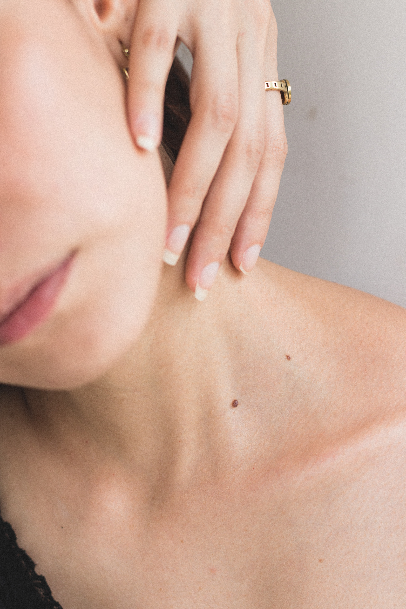

Preventing skin cancer

This is why we created our Safe & Sun UV bracelet, made of silicone and a UV reacting powder. Our bracelet changes color depending on the UV index, going from a transparent white when the index is close to 0 to a dark purple for UV indexes 6 or higher. Our goal with this product was to allow the user to be aware of the dangers that an excessive exposure to the sun could represent as well as to incite him/her to take the appropriate steps to protect his/her skin. Furthermore, our bracelet also fulfills its esthetic purpose through the wide array of colors it can have as well as the design of the Safe & Sun logo appearing on the bracelet.This is why we created our Safe & Sun UV bracelet, made of silicone and a UV reacting powder. Our bracelet changes color depending on the UV index, going from a transparent white when the index is close to 0 to a dark purple for UV indexes 6 or higher.
Our goal with this product was to allow the user to be aware of the dangers that an excessive exposure to the sun could represent as well as to incite him/her to take the appropriate steps to protect his/her skin. Furthermore, our bracelet also fulfills its esthetic purpose through the wide array of colors it can have as well as the design of the Safe & Sun logo appearing on the bracelet.